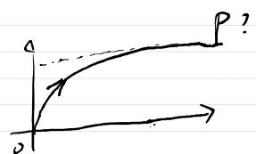

任意初值 $P_0 \geq 0$ 都收敛到同一个 $P$——收敛定理的完整收官
S1 只处理了 $P_0 = 0$ 这个"最低起点"。要推广到任意 $P_0 \geq 0$，用夹逼：把从 $P_0$ 出发的迭代"夹"在两个都收敛到 $P$ 的参照序列之间。下界来自 $P_0 \geq 0$（更小的终端权重给出更小的最优代价，即 $P_k(0) \leq P_k(P_0)$，因为代价关于终端权重单调不减）；上界来自一个聪明的构造——直接采用稳态增益 $u_i = Lx_i$ 做一个次优可行控制，它的代价恰好可以算出闭式 $x_0^{\top}(D^{\top k} P_0 D^k + P - D^{\top k} P D^k)x_0 \to x_0^{\top} P x_0$。上下两界都挤到 $x_0^{\top} P x_0$，夹逼定理（sandwich theorem）给出 $P_k(P_0) \to P$。S5 唯一性反而是送分题：任何不动点 $\bar{P}$ 作为初值时迭代永远停在 $\bar{P}$，而迭代极限唯一，所以 $\bar{P} = P$。
定理结论 (1) 的完整表述是："$\exists P \succ 0$ s.t. $\forall P_0 \geq 0$，$\lim_{k\to\infty} P_k = P$"。上节完成了 $P \succ 0$（S3），本节补上"对任意 $P_0 \geq 0$"这个量词——S1 只覆盖了 $P_0 = 0$。
🧠 策略：夹逼（Sandwich）
对任意 $P_0 \geq 0$，找两个"参照物"：
若 $x_0^{\top} P_k(0) x_0 \leq x_0^{\top} P_k(P_0) x_0 \leq (\text{上界}) \to x_0^{\top} P x_0$，且下界同样 $\to x_0^{\top} P x_0$，则由 $x_0$ 的任意性，$P_k(P_0) \to P$。
记号约定：$P_k(P_0)$ 表示从初值 $P_0$ 出发迭代 $k$ 步的 Riccati 迭代（$P_0(0) = 0$ 的记号沿用上节），$g$ 是 Riccati 算子，$P$ 是极限（满足 ARE），$D = A + BL$ 是稳态闭环矩阵，$L = -[B^{\top} P B + R]^{-1} B^{\top} P A$。
考虑带终端代价的系统 $x_{i+1} = Ax_i + Bu_i$，$x_0$ 给定，代价函数
（左边是 LQR 最优代价的动态规划表达：终端权重 $P_0$ 被 $g$ 反向递推 $k$ 次回到起点——这是 KF L21 辅助系统结论对任意终端权重的版本。）
现在比较两个终端权重：$P_0$ 与 $0$。因为 $P_0 \geq 0$，"终端多背一个半正定代价"只会让最优代价更大：
✅ 板书 A1
由 $x_0$ 任意，即 $P_k(P_0) \geq P_k(0)$（Loewner 序）——从 $P_0$ 出发的迭代恒不低于从 $0$ 出发的迭代。
🧠 直觉
这是"代价关于终端权重的单调性"：最优代价是终端权重的不减函数。终端背的包袱越重，从头到尾的总代价只会更大。也可以从 $g$ 的单调性直接看：$g(S) = A^{\top} S A + Q - (\text{二次修正项})$ 关于 $S \succeq 0$ 单调不减，$P_0 \geq 0 = P_0(0)$ 逐次迭代保持序关系。
上界需要一个"可算的可行代价"。施老师的构造：采用稳态反馈增益 $u_i = L x_i\ \forall i$——不是最优控制（最优的时变增益序列会依赖 $P_0$），而是一个固定可行策略。
在这个策略下轨迹是齐次的：$x_{i+1} = (A + BL)x_i = D x_i$，所以 $x_i = D^i x_0$。代入代价：
关键化简：上节等式①给出 $Q + L^{\top} R L = P - D^{\top} P D$（闭环形式 ARE 移项）。代入求和项，级数同样叠缩：
（逐项相消：$D^{\top}PD - D^{\top 2}PD^2$、$D^{\top 2}PD^2 - D^{\top 3}PD^3$、……直到 $D^{\top(k-1)}PD^{k-1} - D^{\top k}PD^k$。）于是
✅ 板书 A2
最优代价不超过可行代价：$x_0^{\top} P_k(P_0) x_0 \leq \hat{J}$。
🧠 让上界收缩的关键
$D$ 是稳定矩阵（S2 已证 $D = A + BL$ 稳定！），所以 $D^{\top k} P_0 D^k \to 0$ 且 $D^{\top k} P D^k \to 0$（$k \to \infty$）。于是
这就是为什么上界构造要特意用稳态增益 $L$——它让闭环矩阵恰好是那个已被 S2 证明稳定的 $D$，从而两个 $D^{\top k}(\cdot)D^k$ 项都衰减消失。

合并 A1 + A2：
两端极限都是 $x_0^{\top} P x_0$，由夹逼定理（sandwich theorem）：
🎉 S4 完成
板书："$\lim_{k\to\infty} x_0^{\top} P_k(P_0) x_0 = x_0^{\top} P x_0$，Sandwitch theorem $\Rightarrow \lim_{k\to\infty} P_k = P\ \forall P_0 \geq 0$"。
S5：唯一性——非常好证。假设 $\bar{P}$ 是 ARE 的另一个解：$\bar{P} = g(\bar{P})$。取 $P_0 = \bar{P}$ 作为迭代初值，则迭代永远停在原地：
但另一方面，S4 说从任意初值 $P_0 \geq 0$（$\bar{P} \succ 0$ 当然 $\geq 0$）出发都有 $P_k(P_0) \to P$。两个事实合起来：
🏁 收敛定理全部证毕
五步全部完成：(1) $P \succ 0$ 存在且对所有 $P_0 \geq 0$ 收敛；(2) $P$ 是 ARE 唯一解；(3) 闭环 $D = A + BL$ 稳定。至此，KF 增益可以用稳态增益（ARE 解出 $P$ 后 $L = -[B^{\top}PB+R]^{-1}B^{\top}PA$，KF 侧由对偶得到 $K$）、LQR 可以离线一次求解——整个"为什么能用稳态增益"的理论地基铺完。
施老师在课上做了总结（SRT 原话要点）："我们用了接近两个小时的时间，上节课加上这节课，总算把这个定理全部给它证明完了……你看整个这个定理的证明过程当中我们用到了多少的方法——反证法、归纳法，然后……用到了 LQR，用到了数学里面的各种各样的证明，单调递增、sandwich theorem，还要去 construct 一个这种伴随的系统。这个定理还是非常非常的漂亮，所以强烈建议（大家）从头到尾去梳理一下。"
| 步骤 | 证明工具 | 关键构造 |
|---|---|---|
| S1 单调+有界 | 辅助系统（最优控制）+ 能控性 | $J^{*} = x_0^{\top}g^k(0)x_0$；$n$ 步归零控制给上界 |
| S2 闭环稳定 | 等式① + 李雅普诺夫衰减 | $P = D^{\top}PD + Q + L^{\top}RL$ |
| S3 正定性 | 等式②取极限 + 能观性 + 反证法 | $M_0 x_0 = 0 \Rightarrow x_0 = 0$ 矛盾 |
| S4 任意初值 | 夹逼定理 | A1（终端权重单调）+ A2（稳态增益次优控制） |
| S5 唯一性 | 不动点 + S4 | $\bar{P}$ 出发迭代不动，极限唯一 |
从系列 28（KF L21，定理陈述 + 证明框架 + S1）到本讲（系列 29，S3 + S4 + S5），Riccati 收敛理论完整收官。施老师预告接下来进入学生分享环节，KF 系列的"逻辑相关知识"基本讲完。
📌 与 KF 主线的连接
Riccati 方程在两条线里反复出现：KF 的协方差更新（误差协方差 $P_{k|k}$ 的传播）与 LQR 的动态规划（最优代价的反向递推）。收敛定理同时回答两边的问题：KF 里"稳态 Kalman 增益"存在且迭代收敛到它（对偶性把估计问题翻译成 LQR 形式），LQR 里"稳态反馈增益"存在唯一且闭环稳定。这是系列 25（KF L20）对偶性铺垫之后的理论高点。
不看讲义，说明 A1（下界）和 A2（上界）各自用了什么策略，为什么上界构造必须用稳态增益 $L$ 而不是 $P_0$ 对应的时变最优增益？
A1：终端权重单调性（$P_0 \geq 0$ 的最优代价不低于 $P_0 = 0$ 的）。A2：用稳态增益做可行控制，代价闭式可算。用稳态 $L$ 是为了让闭环矩阵是已证稳定的 $D$，$D^{\top k}P_0D^k$、$D^{\top k}PD^k \to 0$，上界极限恰好 $x_0^{\top}Px_0$；换成 $P_0$ 对应的时变最优增益，闭环矩阵不同，衰减性没有现成结论。
能否直接假设 $\bar{P} = g(\bar{P})$ 与 $P = g(P)$，两式相减推出 $\bar{P} = P$？难点在哪？
直接相减会得到一个含 $\bar{P}, P$ 的非线性项（$B^{\top}PB + R$ 的逆与 $B^{\top}\bar{P}B + R$ 的逆之差），不是线性关系，无法直接得出相等。S5 的妙处是绕开代数：借用 S4 的收敛结论——不动点作为初值时迭代不动（$\bar{P}$），而 S4 说所有初值都收敛到同一个 $P$，所以 $\bar{P} = P$。这是"用动力系统的极限唯一性代替代数恒等式"的典型手法。
标量系统 $a = 0.9, b = 1, q = 1, r = 0.1$。分别从 $P_0 = 0$、$P_0 = 0.5$、$P_0 = 5$ 迭代 $p_{k+1} = a^2 p_k + q - \frac{a^2 p_k^2}{p_k + r}$ 各 50 步，观察是否都收敛到同一值。哪个初值单调上升、哪个单调下降？
三个初值 50 步后都收敛到 $p \approx 1.0741$（ARE 唯一正根，与练习 3 实算一致）。$P_0 = 0$ 单调上升（S1 情形，从下方逼近）；$P_0 = 5 > 1.0741$ 单调下降（从上方逼近，因为 $g(p) - p$ 在 $p > p^{*}$ 时为负）；$P_0 = 0.5$ 也单调上升但每步增量比 $P_0 = 0$ 更小。这正是 S4 夹逼论证的标量具象：无论从哪边出发、无论初值多大（$D$ 稳定保证上界项 $D^{\top k}P_0D^k = a^{2k}P_0 \to 0$），极限唯一。
施老师大课堂 · 研讨会系列 KF L22(2/2) · S4 夹逼定理与 S5 唯一性
板书来源：KF L22 · 研讨会系列 29 · 施凌老师（2026-09-05）· 结合课堂录音转写整理